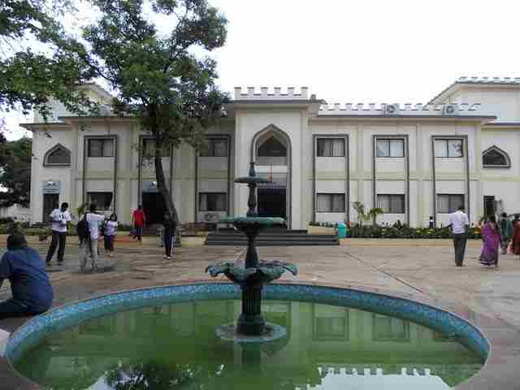
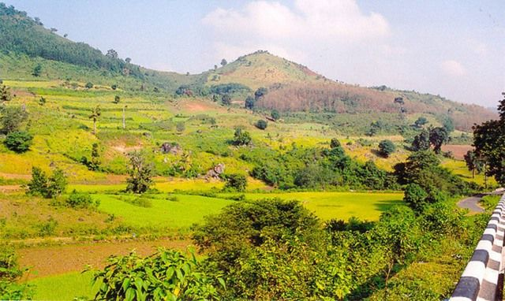
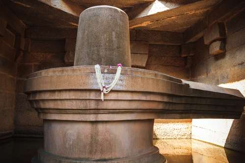

About Ananthagiri
How To Reach
-
 BY AIR:The closest airport to Ananthagiri Hills is Hyderabad. After which you could take a rented vehicle to Ananthagiri Hills which is 80 Km from the city.
BY AIR:The closest airport to Ananthagiri Hills is Hyderabad. After which you could take a rented vehicle to Ananthagiri Hills which is 80 Km from the city. -
 BY BUS:Local buses are available to Vikarabad district which is 10 Km from Anathagiri Hills. However, this is not the best option to visit the place since the timing and frequency of the buses would not be easily available.
BY BUS:Local buses are available to Vikarabad district which is 10 Km from Anathagiri Hills. However, this is not the best option to visit the place since the timing and frequency of the buses would not be easily available. -
 BY TRAIN:The closest railway station to Hampi is Hospet, around 13 km away. Trains from Bengalore, Hubli and many other places in Karnataka halt at the station.Ananthagiri does not have a railway station. The closest station is Araku Valley which is around 20 Km from Anathagiri.
BY TRAIN:The closest railway station to Hampi is Hospet, around 13 km away. Trains from Bengalore, Hubli and many other places in Karnataka halt at the station.Ananthagiri does not have a railway station. The closest station is Araku Valley which is around 20 Km from Anathagiri. -
 BY ROAD - OWN VEHICLE:This is the best route to take if you're travelling to Anathagiri Hills from closeby cities. You could take your own vehicle - both car and two wheelers would be great. Else, you could take a rented vehicle. The drive from Hyderabad to Anathagiri is around 80 Km and is covered in around 2 hours via the Chevella Road.
BY ROAD - OWN VEHICLE:This is the best route to take if you're travelling to Anathagiri Hills from closeby cities. You could take your own vehicle - both car and two wheelers would be great. Else, you could take a rented vehicle. The drive from Hyderabad to Anathagiri is around 80 Km and is covered in around 2 hours via the Chevella Road.
Best Time To Go
-
 BEST TIME TO GO:Best time to visit Ananthagiri Hills is anytime between September to January. The beauty of the place enhances during the monsoon month of September. However, October to January would be slightly chilly and perfect to enjoy a weekend away from the city.
BEST TIME TO GO:Best time to visit Ananthagiri Hills is anytime between September to January. The beauty of the place enhances during the monsoon month of September. However, October to January would be slightly chilly and perfect to enjoy a weekend away from the city. -
 WEATHER:22-28 degree C
WEATHER:22-28 degree C
Humidity 64%
Anathagiri Hills is located around 80 Km from Hyderabad. Although it isn’t very far from Hyderabad, the destination is not one of the most popular places around Hyderabad. And that’s the whole beauty of the place. It’s not very known, commercial or crowded. It is in fact a very small place located at Vikarabad, Ranga Reddy District in Telangana.
Barney loves riding as much as he loves his bike. He had heard of this destination from other biking enthusiasts in our college. Back then in ISB when we weren’t seeing each other officially, one fine day we decided to go for a road trip. That was when we planned to bunk our classes on a weekday and leave for Ananthagiri. Barney called to wake me up at 7 AM. He asked if we should go since it was cloudy and we’d have to cover a long distance on the bike. We were both apprehensive in the beginning but decided to give it a shot. And there we were – leaving college at 7:30 AM. We stopped at Udupi, a small joint close to our college to have coffee to keep us up since the night before we slept at 4 AM. Both of us didn’t know the route. However, Google Navigation came to our rescue almost every time we stepped out of college to go anywhere. And of course, this time too, it worked like a wonder!
The road from Hyderabad to Ananthagiri once you reach outside the main city is nothing less than breathtakingly beautiful. It had started drizzling slightly just 45 minutes after we started the ride. Thankfully Barney was wearing a jacket – which actually helped both of us. I put my hands in his side pockets and was sorted! :)
The condition of the roads is excellent. No bumpy rides. It’s a smooth and wide road with lush green forests on the side which give a mesmerizing view in cloudy drizzly skies. The coffee plantations welcome you on the way on both sides waving the rich light green branches glistening in the light shower. I don’t remember even a single moment when I could take my eyes off the beautiful view being offered to our eyes!

Google navigated us perfectly well. We reached the location almost in 1.5-2 hours. However, once we reached, it had started raining a little heavily. We spotted two small dhabas and planned to stop there before we could go further. We were hungry and thought we could eat something but the dhaba had very limited options. We decided on a cup of tea each and shared a cigarette and left as soon as rain became lighter. It had almost stopped but the weather was dewy and slightly cold, which is actually a perfect weather to visit the place!

We asked the dhaba walas where to go and he recommended that we should go ahead towards a view point area. We found a nice view point and stopped the bike. There was a ledge kind of structure built across which we could see the view of the entire valley. Brilliant greens combined with blue skies. By the way, Hyderabad has some of the most beautiful skies in the world! And sitting on the ledge, we could see the view of dewy sky and deep green valleys. We sat and spoke for some time after which a few localites came to the same place. Since we were enjoying our conversation in peace, we planned to go to another view point. We then took the bike a little head to a point where there were deep green valleys on both sides of the road. We parked there, trekked a little down and sat there. We sat and spoke for a long time till a cop found us. I am sure you know how cops react when they see a couple sitting at a romantic location, even though they’re sitting at a good distance from each other, peacefully chatting and enjoying the view. We were ordered to get up and leave right away. So we did.

Both of us were quite hungry and we planned to stop by the one and only resort out there to have some food. It’s called the Haritha Resort and is ran and maintained by the Telangana State government. The resort isn’t expensive at all both with respect to room rates and food. Many people come to Ananthgiri from Hyderabad for a weekend retreat and stay at this resort. We didn’t have many options to order from. We had poori and bhaji, which was in fact good. Or maybe we were just too hungry. After enjoying a long awaited meal, we left to see the dam across the village which was supposed to be a little farther into the district.

Bike ride towards the dam was a long one. In the insides of the area, our phones weren’t catching internet singles perfectly well due to which we couldn’t use Navigation. We kept asking the way enroute from localites. We chatted all along enjoying the beautiful view and lovely weather. Ultimately, it turned so that we didn’t reach any dam since it was further down the road. We had to head back since it was getting late and we wanted to reach back college before it got dark since we didn’t know the routes.
We headed back to Haritha resort where we enjoyed a leisurely lunch of simple homemade sort of food and then left for Hyderabad. Google directed us well all across. Once we were just about to enter the main city, we stopped by another restaurant to have tea. Barney had ridden the bike for 6 hours already and of course he needed a break. It was a long long journey for him on his Unicorn Dazzler which is a sports bike and not a cruise bike. Although he is very fond of long rides, this one was about covering a very long distance in a very short while without many breaks. After a few minutes, we started off our ride back to Gachibowli again and by 6 PM we were inside college.
Although this was a day trip, the experience has been unforgettable. The whole day was well spent full of mesmerizing views, lovely weather to give us company and conversations – some silly and some serious. Barney woke up to hurting thighs and calves next morning. But he told me later that the trip was worth the pain :)
-

Sasivekalu Ganesha Temple
It is best to start the sight-seeing with this temple owing to Lord Ganesha being the lord of auspicious starts. The idol is 8 feet high and has a huge rotunda built around with large pillars. The idol is known to be sculpted out of a single rock. Since the temple lies on the slopes of Hemkuta hills, it makes it a perfect sunset spot. Interestingly, the name “Sasivekalu” comes from resemblance of Lord Ganesha’s stomach to mustard seeds.
-

Shivlinga
The Shivlinga is a magnificent 3 meters high monolithic idol sculpted out of a single back stone. It is built right next to the Narsinhma idol in Hampi. A water channel is known to be created by the locals in the golden era of Hampi which brought water of river Ganges to the Shivlinga keeping the base of the lingam immersed in water throughout the year. The temple remains open for devotees all through. -

Narsinhma Idol
The magnificent idol of Lord Vishnu in Narsinhma avatar is one of the most popular imagery associated with Hampi. The statue claimed to be carved out of a single granite rock has upper body of a lion including face and claws and lower body of a human. Even though the idol has withered away, it still captures the beholders owing to its splendour and grandiose. -

Vijay Vittalla Temple
It is the most visited tourist destination of Hampi. Before Hampi got invaded, a small township existed in the surrounding areas of the temple. The most known structure is that of a massive Stone Chariot. It has multiple small carvings of battle scenes. The temple complex inside has multiple smaller chambers with pillars etched with super fine detailed carvings. Owing to the visual brilliance of the place, some Bollywood movies have also been shot there. -

Lotus Mahal
Lotus Mahal is a beautiful structure built inside the Zenana enclosure for royal women. It was the summer retreat palace for the Queen and consists of beautiful carvings of birds, flowers and other such patterns. It’s the only structure which doesn’t seem as damaged as the others and is mainly known for its blended Hindu-Islamic architecture. Interestingly, the architecture of the Mahal is such that it remains fully ventilated and cool throughout the summer season. -

Elephant Stable
These remain one of the most iconic imagery for Hampi owing to the beauty and symmetry of the structure. The bed of green grass lies in the front which was mainly used as a ground for royal gatherings and celebrations. The stable, as the name suggests, housed massive royal elephants. It is a row of 11 chambers with beautiful dome structures on the top and detailed carvings on the sides. -

Queen's Bath
The Queen’s bath, as the name suggests, was especially made for the royal women to enjoy their bath during the summer months. The main rectangular pool area is in the middle with depth of around 6 feet, surrounded by beautiful window like structures for women to idle around the pool. There are small canals jutting out of balconies to change the water regularly. It is interesting to see how royal women of Vijaynagar empire used to spend their time indulging in such leisure activities. -

Virupaksha Temple
Virupaksha Temple is by far the most prominent tourist destination in Hampi. It’s main tower at the entrance, as high as 50 meters, is visible from very far away. It was a very simple structure when it was built first, however was expanded and brought to life during the Vijaynagar empire. The temple is dedicated to Lord Shiva and Goddess Pampa. One of the most interesting things to see is amazing application of physics – an inverted image of the tower visible from a small peephole. -

Monkey Temple
On top of the Anjaneya hill on the other side of Tungabhadra River is located the famous Hanuman Temple. It is considered to be the birthplace of Lord Hanuman. One needs to climb almost 700 stairs to reach the top, however the effort is totally worth it! The top point offers an absolutely breath-taking view of the whole town. Even better if you visit the same during sun set. Although the temple is small, the environment is extremely peaceful and serene. -

Mango Tree Restaurant
One place you wouldn’t want to miss if you ever visit Hampi is The Mango Tree restaurant. The place has been there since a few years now. However, due to certain government restrictions, the restaurant had to shift to the interiors of Hampi. The place has a goan feel with floor cushions, jute mattresses laid out below. You could order from a wide range of food starting from yummy masala papad and strong ginger tea to baked pastas and sumptuous cheesy pizzas.
{kind=link}

Beautiful Anantha Padmanabhaswamy Temple at Ananthagiri
Lord Hanuman Idol at Anantha Padmanabhaswamy Temple
{kind=link}

The beautiful Haritha Property with scenic surroundings
View of the Haritha Property

Admist jade green tress and blue skies

Stupendously serene view from top of Ananthgiri Hills
Anathagiri Valley view in sunshine

View offerred by another viewpoint at the top
Ananthagiri valley view in monsoons